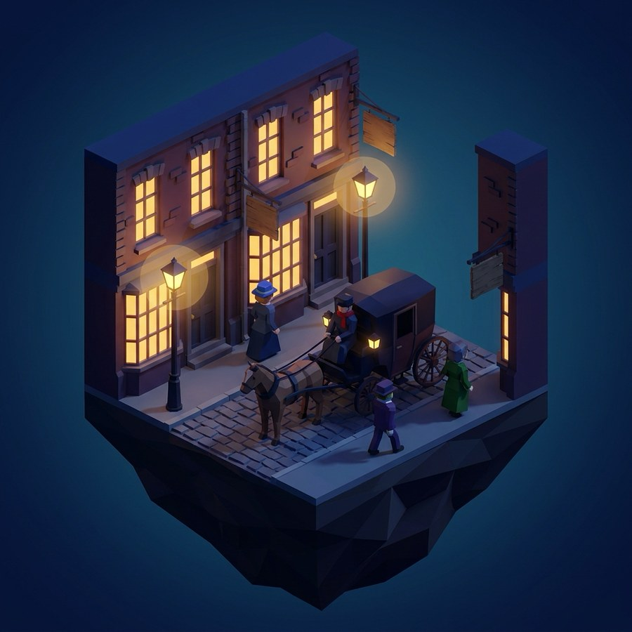
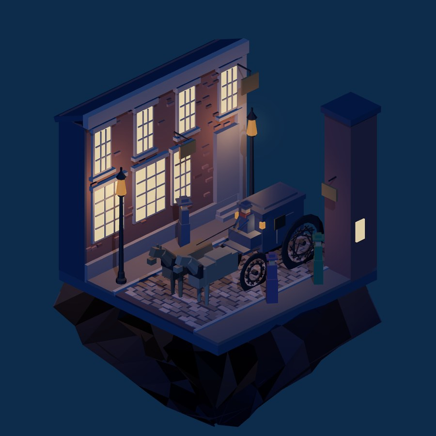

The New King — casting demo
A new King of Bohemia, generated from a single supplied portrait via NB Pro image-to-image (gemini-3-pro-image) + Scenario image→3D (model_yvo3d-image-to-3d) — the product's own pipeline.
1 · The unmask

2 · The photograph

3 · The mesh — four takes
The same concept plate, four ways: two image→3D generators, a graft, and an
auto-rig. In the viewer by default: Tripo 3.1 (tripo-v3-1-image-to-3d),
smart low poly with a rebaked face texture — 19,622 triangles against the previous mesh's
100k. On the switch: the hybrid graft (Tripo head on the procedural game body), the
auto-rigged and animated take (Make-It-Animatable + a stock Mixamo run),
and the previous Scenario YVO3D generation.
The Baker Street behind him is not a plate or a photograph: it is a code-only procedural
reconstruction of the concept render, rebuilt part by part in Three.js by the img2threejs
pipeline (136 parts · 14,466 triangles · zero textures) and lit by its
own gas lamps, which flicker.



